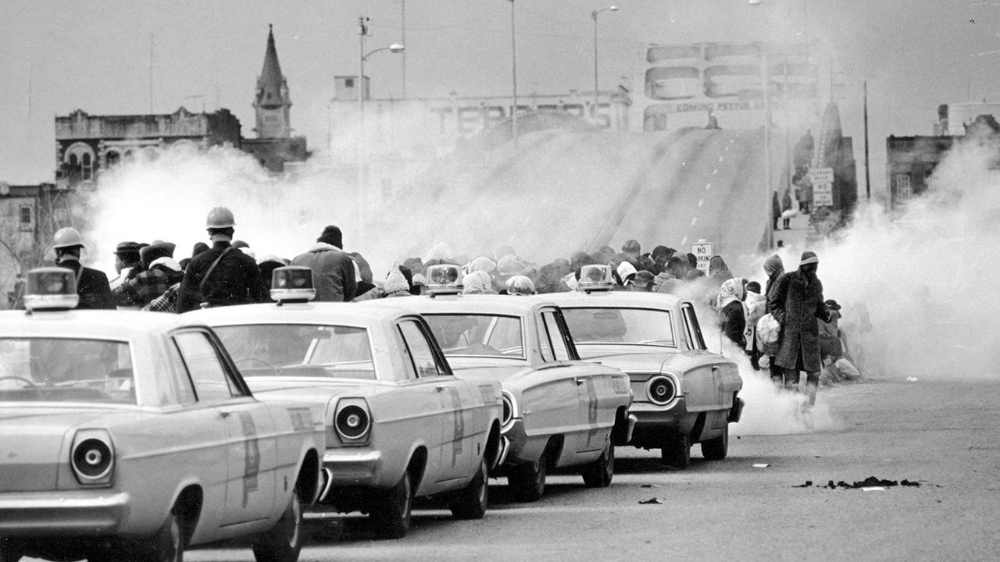
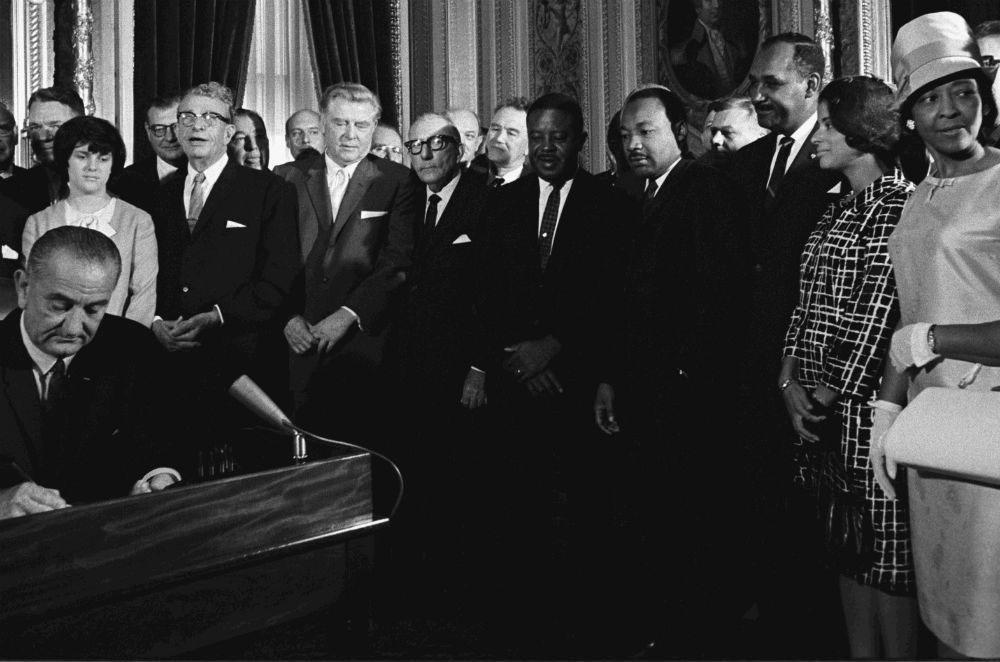
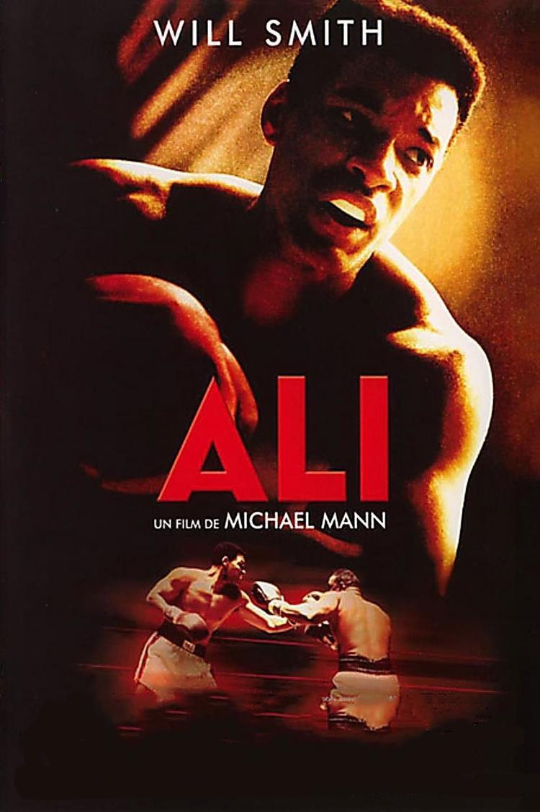
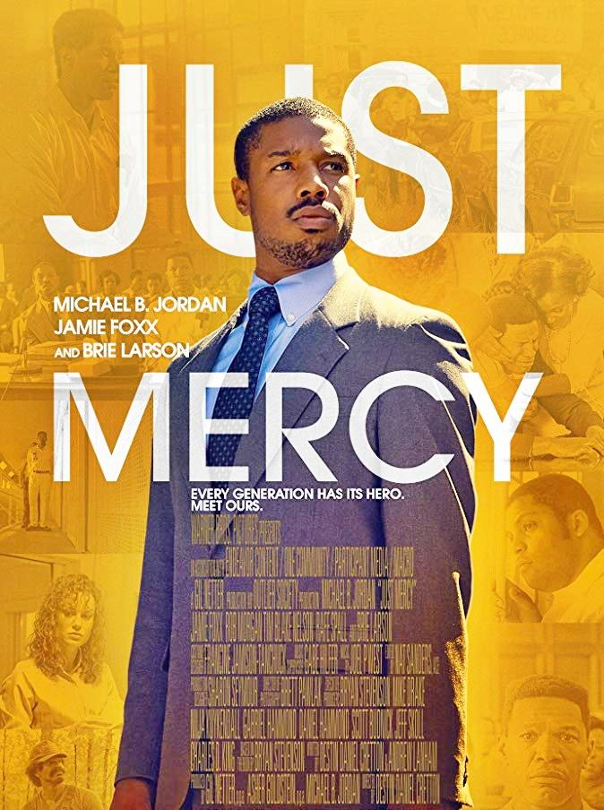
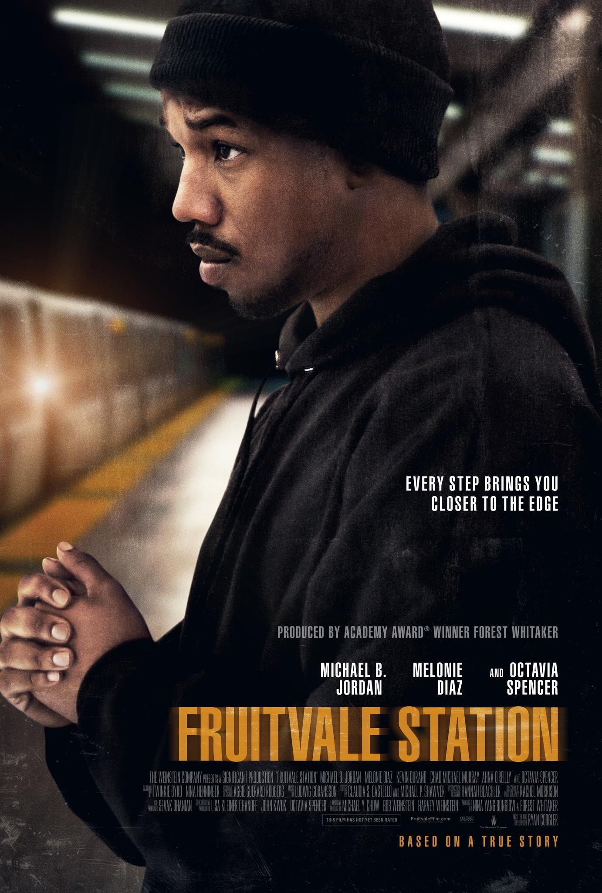

7 mars 1965 - Bloody Sunday
Des manifestants pacifiques sont attaqués sur le pont Edmund Pettus.
DROITS CIVIQUES
SELMA retrace la lutte historique du Dr Martin Luther King pour garantir le droit de vote à tous les citoyens. Une dangereuse et terrifiante campagne qui s’est achevée par une longue marche, depuis la ville de Selma jusqu’à celle de Montgomery, en Alabama, et qui a conduit le président Johnson à signer la loi sur le droit de vote en 1965.

Des manifestants pacifiques sont attaqués sur le pont Edmund Pettus.

Des milliers de personnes se mobilisent pour défendre le droit de vote.

Une loi est signée pour lutter contre les discriminations.
Découvre d'autres films qui abordent le racisme, les discriminations et les luttes pour l'égalité.

2001

2019

2016

2013